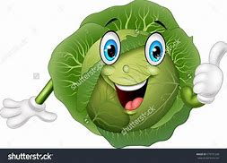
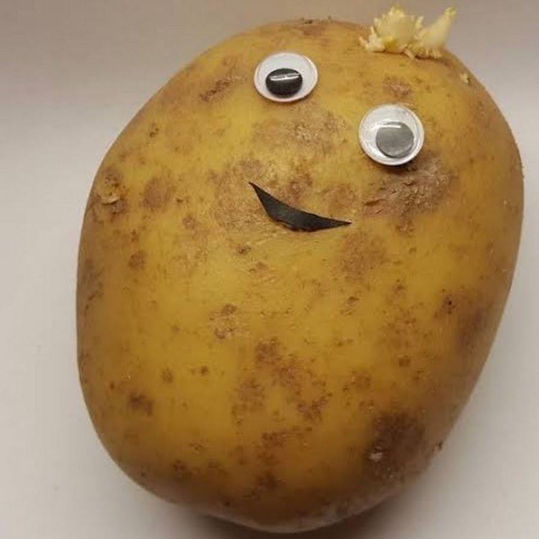

CARROT
The carrot (Daucus carota subsp. sativus) is a root vegetable, typically orange in color, though heirloom variants including purple, black, red, white, and yellow cultivars exist,[2][3][4] all of which are domesticated forms of the wild carrot, Daucus carota, native to Europe and Southwestern Asia. The plant probably originated in Persia and was originally cultivated for its leaves and seeds. The most commonly eaten part of the plant is the taproot, although the stems and leaves are also eaten. The domestic carrot has been selectively bred for its enlarged, more palatable, less woody-textured taproot.

CABBAGE
Cabbage, comprising several cultivars of Brassica oleracea, is a leafy green, red (purple), or white (pale green) biennial plant grown as an annual vegetable crop for its dense-leaved heads. It is descended from the wild cabbage (B. oleracea var. oleracea), and belongs to the "cole crops" or brassicas, meaning it is closely related to broccoli and cauliflower (var. botrytis); Brussels sprouts (var. gemmifera); and Savoy cabbage
BEETROOT
AThe beetroot is the taproot portion of a beet plant,[1] usually known in North America as beets while the vegetable is referred to as beetroot in British English, and also known as the table beet, garden beet, red beet, dinner beet or golden beet.
It is one of several cultivated varieties of Beta vulgaris grown for their edible taproots and leaves (called beet greens); they have been classified as B. vulgaris subsp. vulgaris Conditiva Group.[2]
Other cultivars of the same species include the sugar beet, the leaf vegetable known as chard or spinach beet, and mangelwurzel, which is a fodder crop. Three subspecies are typically recognized.
The cultivation of grapes began perhaps 8,000 years ago, and the fruit has been used as human food over history. Eaten fresh or in dried form (as raisins, currants and sultanas), grapes also hold cultural significance in many parts of the world, particularly for their role in winemaking. Other grape-derived products include various types of jam, juice, vinegar and oil..

POTATO
The potato (/pəˈteɪtoʊ/) is a starchy root vegetable native to the Americas that is consumed as a staple food in many parts of the world. Potatoes are tubers of the plant Solanum tuberosum, a perennial in the nightshade family Solanaceae.
Wild potato species can be found from the southern United States to southern Chile. Genetic studies show that the potato has a single origin, in the area of present-day southern Peru and extreme northwestern Bolivia. Potatoes were domesticated there about 7,000–10,000 years ago from a species in the S. brevicaule complex. Many varieties of the potato are cultivated in the Andes region of South America, where the species is indigenous.